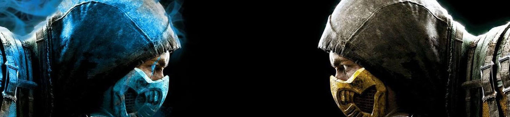

Mortal Kombat(pictured above) is a typical fighting game. The fighting game genre as been popular since the 90s.
More about Fighting games
More about Fighting games
Fighting games center around close-ranged combat typically one on one fights or against a small number of equally powerful opponents, often involving violent and exaggerated unarmed attacks. Most fighting games feature a large number of playable characters and a competitive multiplayer mode. While most fighting games emphasize hand-to-hand combat, some fighting games such as “Soulcalibur and “Samurai Shodown” center around combat with melee weapons. Many fighting games incorporate heavily emphasized attacks based on various martial art systems. The first fighting game was "Heavyweight Champ", and was designed in 1976. The "Super Smash Bros" series(pictured right) is one the most popular games in the genre for the past 20 years.